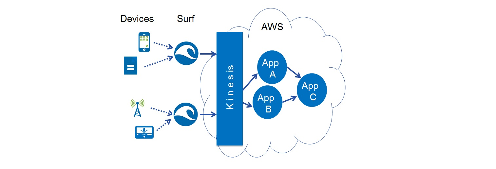

Examples
- Example 1 - Simple Setup
- Example 2 - Page Count
Example 1 – Simple Set-up
This example explores connectivity between on-premise data sources and cloud-based Kinesis applications.

In this example the data source and the application are very simple – data source generates a stream of time-stamps, the application displays the time-stamps on a console.
Surf Data Source
The code for the data source can be found in file com.informatica.surf.sources.dummy.DummySource.java For this sample the data source generates time-stamps and streams them to Kinesis application:
public void read(VDSEventList readEvents) throws Exception {
Thread.sleep(1000);
Date d = new Date();
byte []b = d.toString().getBytes();
readEvents.addEvent(b, b.length, _headers);
}
Generally, a Surf user only needs to configure a data source like File-tailer, HTTP, or MQTT. However, the user may also easily develop new data sources as needed.